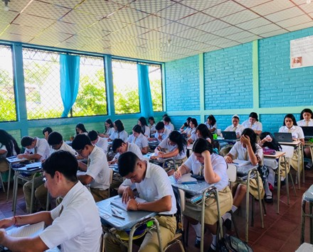

Instituto Nacional Ernesto Flores
Inicio
Nosotros
Secciones
Software
Agropecuario
General
Administrativo Contable
Actividades Extracurriculares
Técnico en Desarrollo de Software
Técnico Agropecuario
Bachillerato General
<
>
Galería
Áreas Destacadas
Técnico en Desarrollo de Software
Técnico Agropecuario
Bachillerato General

Técnico Administrativo Contable